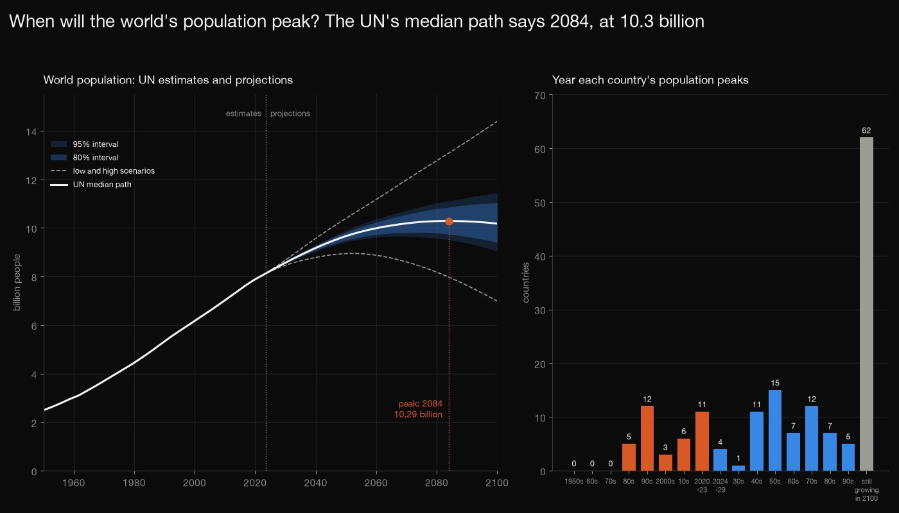
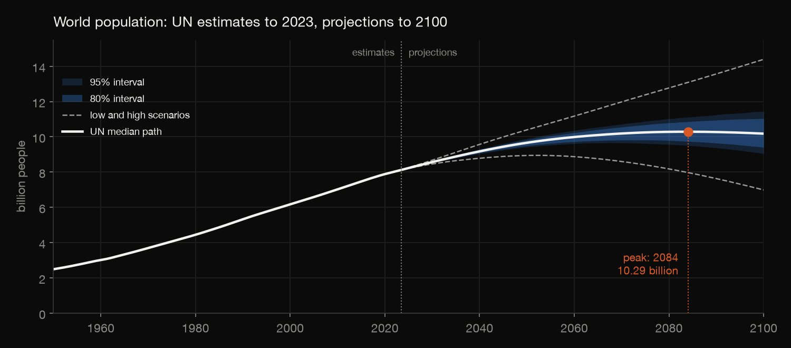
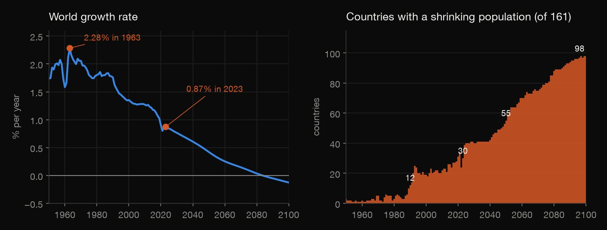
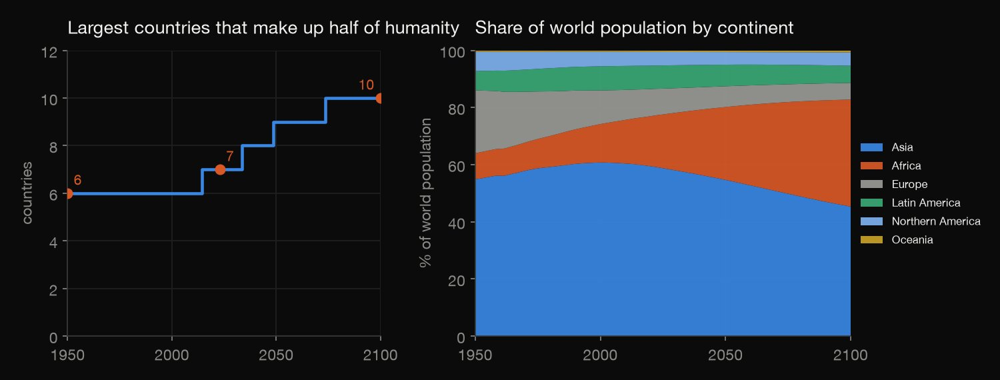
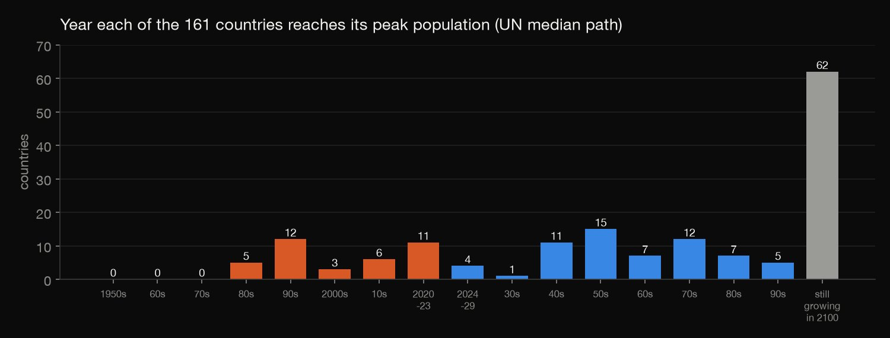
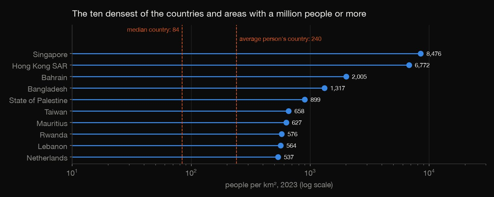

Python · Exploratory analysis · 2026-10
When Will the World's Population Peak?
The UN's median path peaks the world's population in 2084 at 10.3 billion, but its 95% range for 2100 runs from 9.0 to 11.4 billion and its upper bound is still rising; 37 of 161 countries have already peaked, and 62 are still growing in 2100.

2024 to 2100 are projections, not observations: the median path is a scenario, and the 80% and 95% intervals are the UN's own probabilistic projections. A bound is a curve of year-by-year bounds, not an interval for the peak year. Growth, peak and density figures use the 161 of 237 countries or areas with at least a million people in 2023. Density is per km² of land area, and the average person's figure is a population-weighted mean of national densities, not the density where a person lives.
01 — The problem
The UN Population Division estimates every country's population back to 1950 and projects it to 2100. When does the world's population stop growing, how sure is that, and what happens underneath: which countries are already shrinking, where do people live, and how crowded is it?
The questions follow DataCamp's "World Population Analysis" (density, growth rates and global distributions). The data is the UN's World Population Prospects 2024, the latest revision I could find: official estimates to 2023 and projections after that, not a course file. The page says wherever a figure is a projection.
02 — What I built
Two UN files, audited and analysed:
- Audit: 237 countries or areas, whether the world equals the sum of its parts, and what the growth-rate column really is.
- The world's path: the median path with the UN's scenarios and prediction intervals, and each curve's peak.
- Growth and shrinking countries, distribution, peaks and density for the 161 countries with a million people or more.
- Check:
check.pyrecomputes 5,679 numbers from the raw files with plain Python.
03 — How it was built
- 01
Download the two UN files
The UN Population Division's World Population Prospects 2024 (CC BY 3.0 IGO): the demographic indicators for the medium variant, and the total population under the other scenarios and the 80% and 95% prediction intervals. They are 33 MB together, so they are not committed; the script fetches them and records their checksums.
- 02
Audit before analysing
237 countries or areas. The world equals the sum of its countries (the largest gap in any year is 14 people) and of its six continents, and the two files agree on the median path. The growth-rate column turns out to be 100 × ln of next year's 1 January population over this year's, to within 0.0005 points for every country and year.
growth_gap = float((100 * np.log(nxt[ok] / cs.loc[ok, "TPopulation1Jan"]) - cs.loc[ok, "PopGrowthRate"]).abs().max()) - 03
Follow the world's path and its uncertainty
The median path with the UN's low and high scenarios and its 80% and 95% prediction intervals, and the year and height of each curve's peak. A curve that is still rising in 2100 has no peak in the data.
s = wy[name].dropna(); yr = int(s.idxmax()); peaks.append({"series": name, "peak_year": yr, "peak_billion": s.loc[yr] / 1e6, "billion_in_2100": s.loc[LAST] / 1e6}) - 04
Count the shrinking countries
For the 161 countries with at least a million people in 2023: how many have a negative growth rate in each year from 1950 to 2100. The 76 smaller places are left out, so a few thousand people on an island do not count as a national trend.
- 05
How many countries make up half of humanity?
For every year, the countries sorted from the largest, and the smallest number whose populations add up to half of the world's; and the six continents' shares.
t = t.sort_values(P, ascending=False); share = 100 * t[P].cumsum() / t[P].sum(); n = int((share < 50).sum() + 1) - 06
Find each country's peak, and its density
A country's peak is the year of its highest population on the median path, and it is "still growing in 2100" if that year is the last. Density is the UN's people per km²: the median country, and the mean weighted by population, which is the density of the country the average person lives in.
pk = cb.loc[cb.groupby("Location")[P].idxmax()].set_index("Location") - 07
Recompute it from the raw files
check.pyrecomputes 5,679 numbers with different code, plain Python on the raw files with no pandas: the audit, every year of the world's path and every scenario curve, each curve's peak, the half-of-humanity counts and lists for every year, the continents' shares, the shrinking counts, each country's peak year, change and density, the median and weighted density, and the summary figures.gap = max(abs(100 * math.log(v[t + 1]["jan"] / v[t]["jan"]) - v[t]["gr"]) for v in countries.values() for t in range(FIRST, LAST))
04 — Results

| Curve | Peak | Peak (bn) | 2100 (bn) |
|---|---|---|---|
| Median path | 2084 | 10.29 | 10.18 |
| Lower 80% | 2075 | 9.82 | 9.41 |
| Lower 95% | 2068 | 9.66 | 9.05 |
| Upper 80% | – | – | 11.03 |
| Upper 95% | – | – | 11.44 |
| Low scenario | 2052 | 8.95 | 6.99 |
| High scenario | – | – | 14.40 |
The date is not fixed. The world had 2.49 billion people in 1950 and 8.09 billion in 2023, 5.6 billion more. The UN's median path peaks in 2084 at 10.29 billion and is at 10.18 billion in 2100. A dash means the curve is still rising in 2100, so it has no peak before the data ends: the upper 80% and 95% bounds and the high scenario. The lower bounds peak earlier and lower, and the low scenario peaks in 2052. For 2100 the 95% interval runs from 9.05 to 11.44 billion and the low and high scenarios from 6.99 to 14.40.

Growth has been slowing for sixty years, and more countries are shrinking. The world's growth rate peaked at 2.28% a year in 1963, was 0.87% in 2023, and turns negative in 2084 on the median path (−0.13% in 2100). Of the 161 countries with at least a million people in 2023, 12 had a falling population in 1990 and 30 in 2023; the median path has 55 in 2050 and 98 in 2100.

| Year | For half | Top 10 | Largest |
|---|---|---|---|
| 1950 | 6 | 61.1% | China 21.8% |
| 2023 | 7 | 57.1% | India 17.8% |
| 2100 | 10 | 50.2% | India 14.8% |
Humanity spreads out. "For half" is how many of the largest countries it takes to reach half of all people: 6 in 1950 (China, India, the United States, Russia, Japan, Germany), 7 in 2023 (India, China, the United States, Indonesia, Pakistan, Nigeria, Brazil) and 10 in 2100 (India, China, Pakistan, Nigeria, DR Congo, the United States, Ethiopia, Indonesia, Tanzania, Bangladesh). By continent, Asia holds 54.9% in 1950, 59.0% in 2023 and 45.3% in 2100; Africa 9.1%, 18.3% and 37.5%; Europe 22.0%, 9.2% and 5.8%; Latin America and the Caribbean 6.7%, 8.1% and 6.0%; Northern America 6.7%, 4.7% and 4.7%; Oceania 0.5%, 0.6% and 0.7%.

| Country | Peak | 2023 | 2100 |
|---|---|---|---|
| China | 2021 | 1,423 | 633 |
| Japan | 2009 | 124 | 77 |
| Italy | 2014 | 59 | 35 |
| Russia | 1991 | 145 | 126 |
| India | 2061 | 1,438 | 1,505 |
| Nigeria | – | 228 | 477 |
| Pakistan | – | 248 | 511 |
| DR Congo | – | 106 | 431 |
Many countries have already peaked; many have not started. The peak is the year of a country's highest population on the median path; the table gives millions of people, and a dash means still growing in 2100. 37 of the 161 countries have peaked by 2023, with 26.9% of the world's people: the ten largest are China (2021), Russia (1991), Japan (2009), Thailand (2022), Italy (2014), South Korea (2020), Spain and Poland (2023), Ukraine (1993) and Taiwan (2019). 20 more peak by 2050, 62 in all peak between 2024 and 2099 (45.0% of people), and 62 are still growing in 2100 (27.9%), among them Pakistan, Nigeria, Ethiopia, DR Congo and Tanzania. China falls by 55.5% by 2100.

Crowded for whom? The median of the 161 countries has 84 people per km², while the average person lives in a country with 240, the mean weighted by population, because large countries are denser than small ones. The densest are Singapore (8,476), Hong Kong (6,772), Bahrain (2,005) and Bangladesh (1,317), the densest country with 10 million people or more.
05 — What I'd do next
- Look at what drives the projections (fertility, mortality and migration are in the same UN files), not just the totals.
- Compare this revision with the previous one to see how far the peak year and height have moved between editions.
- Use city or grid-cell density instead of national averages, to see how crowded people really are where they live.